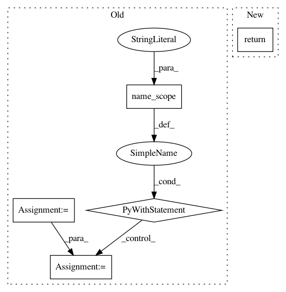

91e2f847f6dd9d57af9276d8d4aeee1e1fdc9030,tensorflow_transform/mappers.py,,string_to_int,#Any#Any#Any#Any#Any#Any#Any#,320
Before Change
Raises:
ValueError: If `top_k` or `frequency_threshold` is negative.
with tf.name_scope(name, "string_to_int"):
deferred_vocab_and_filename = analyzers.uniques(
x,
top_k=top_k,
frequency_threshold=frequency_threshold,
vocab_filename=vocab_filename)
return apply_vocab(
x, deferred_vocab_and_filename, default_value, num_oov_buckets)
def apply_vocab(x, deferred_vocab_filename_tensor, default_value=-1,
num_oov_buckets=0, lookup_fn=None, name=None):
rMaps `x` to a vocabulary specified by the deferred tensor.
After Change
vocab_filename=None,
name=None):
rSee `tft.compute_and_apply_vocabulary`.
return compute_and_apply_vocabulary(
x=x,
default_value=default_value,
top_k=top_k,
frequency_threshold=frequency_threshold,
num_oov_buckets=num_oov_buckets,
vocab_filename=vocab_filename,
name=name)
def apply_vocabulary(x,
deferred_vocab_filename_tensor,
In pattern: SUPERPATTERN
Frequency: 5
Non-data size: 5
Instances
Project Name: tensorflow/transform
Commit Name: 91e2f847f6dd9d57af9276d8d4aeee1e1fdc9030
Time: 2018-06-12
Author: tf-transform-dev@google.com
File Name: tensorflow_transform/mappers.py
Class Name:
Method Name: string_to_int
Project Name: tensorflow/models
Commit Name: f2ea2f537967af92fd47eeeb91b0e312aedaddad
Time: 2019-05-24
Author: tobyboyd@google.com
File Name: official/transformer/v2/transformer_main.py
Class Name: TransformerTask
Method Name: eval
Project Name: rwth-i6/returnn
Commit Name: db8867190494f2dc7cebb7203978770458cc23c8
Time: 2021-03-12
Author: albzey@gmail.com
File Name: returnn/tf/layers/base.py
Class Name: LayerBase
Method Name: get_batch_dim
Project Name: tensorflow/transform
Commit Name: 91e2f847f6dd9d57af9276d8d4aeee1e1fdc9030
Time: 2018-06-12
Author: tf-transform-dev@google.com
File Name: tensorflow_transform/mappers.py
Class Name:
Method Name: apply_vocab
Project Name: rlworkgroup/garage
Commit Name: 6c6331df007fb155331c2fac0107b412ab62d943
Time: 2019-09-21
Author: ahtsans@gmail.com
File Name: src/garage/tf/policies/continuous_mlp_policy.py
Class Name: ContinuousMLPPolicy
Method Name: get_action_sym